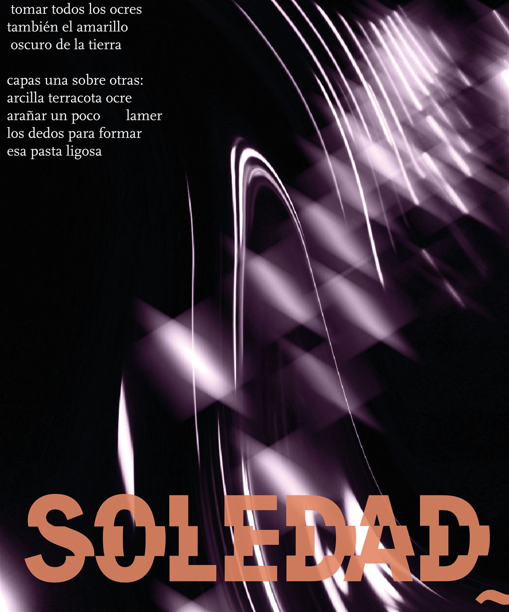
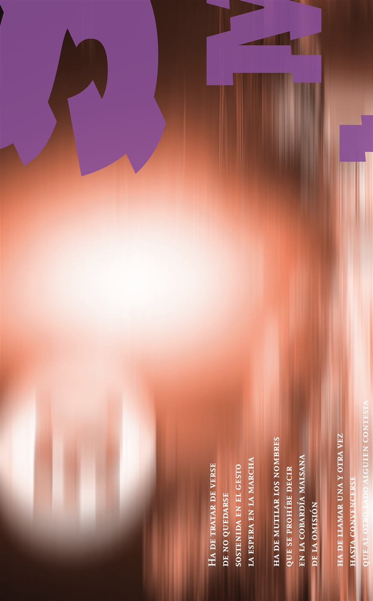

Personal / Editorial
Afiche · publicación
Poetas
en papel.
 POETAS
POETAS✦
Sobre el proyecto
Propuesta editorial para una colección de poetas, desarrollada a través de un afiche en formato A3, una publicación y piezas desplegables. El sistema explora cómo la tipografía, la composición y el objeto impreso pueden construir una atmósfera propia.
Vista rápida / arrastra
Una pila de
fragmentos.
Presiona o arrastra la tarjeta frontal para descubrir las distintas piezas del sistema editorial.

Afiche

Tipografía

Desplegable

Publicación